01 · SQL con IA

Resaltado, lo que ya construiste en la ruta hasta este punto; en gris, lo que todavía viene.
⏱️ Tiempo: 35 min · 📍 Dónde: Catalog y SQL Editor · 🧰 Lo que usas: Unity Catalog, SQL Warehouse, Genie Code
Tu primer contacto con los datos de churn. Vas a ver dónde están los datos, consultarlos con SQL y pedirle a la IA (Genie Code) que escriba el SQL por ti a partir de una pregunta en español.
🎯 Al terminar vas a…
- Saber cómo se organizan los datos en Databricks (catálogo → schema → tabla)
- Tener tu schema personal, donde vas a guardar todo lo que construyas en el curso
- Ejecutar consultas en el SQL Editor
- Generar SQL con Genie Code escribiendo en lenguaje natural
🧠 Conceptos de Databricks de este módulo
| Concepto | Qué es | Analogía |
|---|---|---|
| Unity Catalog | El sistema que organiza, documenta y protege todos los datos y activos de IA de la empresa | La biblioteca con su catálogo de fichas |
| Catálogo → Schema → Tabla | La dirección de cada dato, en 3 partes. Ejemplo: fromzerotohero.churn.dim_cliente |
Armario → cajón → carpeta |
| SQL Editor | La pantalla donde escribes y ejecutas consultas SQL | Una hoja en blanco para hacer preguntas a los datos |
| SQL Warehouse | El motor que ejecuta el SQL. Se enciende solo cuando lo usas y se apaga solo | El motor de un auto |
| Genie Code | El asistente de IA de Databricks para quien desarrolla: escribe y explica SQL y código | Un colega experto en SQL sentado a tu lado |
| Delta | El formato en que se guardan las tablas. Guarda el historial de cambios | Un documento con "historial de versiones" |
📚 SQL es el idioma para hacer preguntas a una base de datos.
SELECT= "muéstrame",FROM= "de esta tabla",GROUP BY= "agrupado por",ORDER BY= "ordenado por". No necesitas saberlo de memoria: hoy lo vas a copiar y, después, Genie Code lo va a escribir por ti.
✅ Antes de empezar
- Ejecutaste la verificación de ambiente y salió 🟢 o 🟡
- Tienes anotado tu schema (ej.:
ggarcia)
Paso 1: Conocer la base en Unity Catalog
Antes de consultar, veamos cómo están organizados los datos.
- En el menú lateral izquierdo, haz clic en Catalog (ícono de libro/estantería)
- En la lista de catálogos, haz clic en la flecha junto a
fromzerotoheropara abrirlo - Abre el schema
churn. Es la base compartida del curso: clientes, planes, suscripciones, uso, facturación y tickets de soporte - Haz clic en la tabla
hecho_suscripcion. Se abre su página con varias pestañas:- Overview: las columnas y el comentario de cada una. Busca
churn_flag: dice "1 si canceló (churn), 0 si está activo" - Sample Data: algunas filas de ejemplo, sin escribir SQL
- Details: dueño, formato (Delta) y fecha de creación
- Overview: las columnas y el comentario de cada una. Busca
- En la lista de columnas, fíjate que
id_clientetiene una marca de FK (clave foránea): significa que apunta a la tabladim_cliente. Si aparece el botón View relationships, haz clic para ver cómo se conectan las tablas
💡 ¿Por qué importa? Los comentarios y las relaciones no son solo documentación: son los que ayudan a Genie Code (en este módulo) y a los Genie Agents (Ej. 7) a escribir el SQL correcto. Datos bien documentados = respuestas de IA confiables.
✅ Checkpoint: viste las 8 tablas del schema churn y el comentario de churn_flag.
Paso 2: Abrir el SQL Editor
- En el menú lateral izquierdo, haz clic en SQL Editor
- Si no se abre una consulta en blanco, haz clic en Create new → SQL Query (o en el + de las pestañas)
- Arriba del editor hay un selector de cómputo. Elige
fromzerotohero_workshop_wh - Junto al botón Run all hay un selector de catálogo y schema. Elige el catálogo
fromzerotoheroy el schemachurn:

💡 ¿Por qué elegir el catálogo y el schema? Así puedes escribir solo el nombre de la tabla. En este curso igual usamos la dirección completa (
fromzerotohero.churn.tabla) para que siempre funcione.
Paso 3: Crear tu schema personal
Tu schema personal es tu espacio de trabajo: a partir del Ej. 3, todo lo que construyas queda ahí.
- Copia la consulta de abajo: pasa el mouse sobre el bloque y haz clic en el ícono de copiar (dos cuadrados), en la esquina del bloque
- Pégala en el SQL Editor
- Reemplaza
<tu_schema>por tu schema (ej.:ggarcia). Quedaríafromzerotohero.ggarcia - Haz clic en Run (o presiona Ctrl + Enter / Cmd + Enter en Mac)
✅ Checkpoint: el resultado dice OK. Si la verificación de ambiente ya lo creó, también dice OK (por el IF NOT EXISTS).
Paso 4: Consultas guiadas
Para cada consulta: copia → pega en el SQL Editor (reemplazando lo anterior) → Run → mira el resultado.
💡 Si tienes varias consultas en el editor, selecciona solo la que quieres con el mouse antes de hacer clic en Run: Databricks ejecuta solo el texto seleccionado.
4.1 ¿Cuántos clientes hay en cada segmento?
SELECT
segmento,
COUNT(*) AS clientes
FROM fromzerotohero.churn.dim_cliente
GROUP BY segmento
ORDER BY clientes DESC;
👉 Resultado esperado
| segmento | clientes |
|---|---|
| Consumidor | 1.200 |
| PyME | 595 |
| Corporativo | 205 |
4.2 ¿Cuántas suscripciones están activas y cuántas se cancelaron?
SELECT
status,
COUNT(*) AS cant
FROM fromzerotohero.churn.hecho_suscripcion
GROUP BY status
ORDER BY cant DESC;
👉 Resultado esperado
| status | cant |
|---|---|
| Activa | 1.460 |
| Cancelada | 540 |
💡 540 de 2.000 = 27% de churn. Este número te va a acompañar todo el curso.
Paso 5: Genie Code escribe el SQL por ti
Genie Code es el asistente de IA para quien trabaja con datos y código. Le describes lo que quieres en español y él escribe el SQL.
⚠️ No lo confundas con los Genie Agents del Ej. 7: Genie Code te ayuda a construir (escribe SQL y código); un Genie Agent responde preguntas de negocio a cualquier persona.
- Arriba a la derecha de la pantalla, haz clic en el botón de Genie Code. Se abre un panel a la derecha
- Copia un prompt a la vez de los de abajo y pégalo en el panel de Genie Code. Presiona Enter
- Lee el SQL que generó. Si te propone insertarlo en el editor, acepta; si no, cópialo al editor
- Haz clic en Run y compara con el resultado esperado
💡 ¿Por qué revisar antes de ejecutar? La IA es muy buena, pero eres tú quien conoce el negocio. Revisar el SQL es como revisar un e-mail antes de enviarlo.
Prompt 1: tasa de churn por segmento
👉 Resultado esperado
SELECT
segmento,
ROUND(AVG(churn_flag), 3) AS tasa_churn
FROM fromzerotohero.churn.feature_churn
GROUP BY segmento
ORDER BY tasa_churn DESC;
| segmento | tasa_churn |
|---|---|
| Consumidor | 0,303 |
| PyME | 0,239 |
| Corporativo | 0,166 |
💡 Como
churn_flagvale 1 (canceló) o 0 (activo), su promedio es justamente la tasa de churn.
Prompt 2: los 5 principales motivos de cancelación
Escribe una consulta con los 5 principales motivos de cancelación de las suscripciones canceladas (churn_flag = 1) usando la tabla fromzerotohero.churn.hecho_suscripcion.
👉 Resultado esperado
SELECT
motivo_cancelacion,
COUNT(*) AS cant
FROM fromzerotohero.churn.hecho_suscripcion
WHERE churn_flag = 1
GROUP BY motivo_cancelacion
ORDER BY cant DESC
LIMIT 5;
| motivo_cancelacion | cant |
|---|---|
| Insatisfacción | 196 |
| Precio | 148 |
| Competencia | 104 |
| Atención | 80 |
| Cambio de necesidad | 12 |
💡 Fíjate en el
WHERE churn_flag = 1: sin él, el "motivo" más común sería vacío (las 1.460 suscripciones activas no tienen motivo).
Prompt 3: tasa de churn por plan
Escribe la tasa de churn por plan usando fromzerotohero.churn.hecho_suscripcion y fromzerotohero.churn.dim_plan.
👉 Resultado esperado
SELECT
p.nombre_plan,
ROUND(AVG(a.churn_flag), 3) AS tasa_churn
FROM fromzerotohero.churn.hecho_suscripcion a
JOIN fromzerotohero.churn.dim_plan p ON a.id_plan = p.id_plan
GROUP BY p.nombre_plan
ORDER BY tasa_churn DESC;
| nombre_plan | tasa_churn |
|---|---|
| Básico | 0,317 |
| Estándar | 0,274 |
| Premium | 0,225 |
| Empresarial | 0,157 |
💡 El
JOINune dos tablas por una columna en común (id_plan). Genie Code lo descubrió solo gracias a las relaciones documentadas en Unity Catalog (Paso 1).
Prompt 4: cancelaciones por mes
Cuenta cuántas suscripciones se cancelaron por mes usando fromzerotohero.churn.hecho_suscripcion, considerando solo las canceladas (churn_flag = 1) según la fecha de cancelación (fecha_fin).
👉 Resultado esperado
SELECT
date_trunc('month', fecha_fin) AS mes,
COUNT(*) AS cancelaciones
FROM fromzerotohero.churn.hecho_suscripcion
WHERE churn_flag = 1
GROUP BY 1
ORDER BY 1;
Una fila por mes, de marzo de 2023 a agosto de 2025, con entre 11 y 30 cancelaciones por mes.
💡 En el resultado, haz clic en + (junto a la tabla de resultados) → Visualization y elige Line para verlo como gráfico.
Paso 6 (opcional): el historial de una tabla Delta
Las tablas Delta guardan cada cambio como una versión. Puedes ver el historial y hasta consultar cómo era la tabla antes (time travel):
-- Historial de versiones de la tabla
DESCRIBE HISTORY fromzerotohero.churn.hecho_suscripcion;
-- La tabla como estaba en su primera versión (versión 0)
SELECT COUNT(*) FROM fromzerotohero.churn.hecho_suscripcion VERSION AS OF 0;
💡 ¿Para qué sirve? Si alguien borra o cambia datos por error, puedes ver qué pasó y recuperar la versión anterior.
🎯 Desafío
¿Qué plan tiene la mayor tasa de churn y cuántos clientes perdió? Intenta pedírselo a Genie Code con tus propias palabras.
👉 Resultado esperado
| Plan | Tasa de churn | Clientes perdidos |
|---|---|---|
| Básico | 0,317 | 257 |
| Estándar | 0,274 | 160 |
| Premium | 0,225 | 92 |
| Empresarial | 0,157 | 31 |
➡️ El plan Básico concentra el mayor churn: menor barrera de salida y menor valor percibido.
🧯 Si algo sale mal
| Síntoma | Qué hacer |
|---|---|
TABLE_OR_VIEW_NOT_FOUND |
Revisa que escribiste la dirección completa fromzerotohero.churn.<tabla> y sin espacios |
PERMISSION_DENIED en CREATE SCHEMA |
Avisa al instructor: falta el permiso CREATE SCHEMA (lo da el Setup) |
No aparece el warehouse fromzerotohero_workshop_wh |
Avisa al instructor: falta el permiso CAN USE en el warehouse |
| La consulta tarda la primera vez | Es normal: el warehouse se está encendiendo (unos segundos) |
| Genie Code generó un SQL distinto | ¡Puede pasar! Compara el resultado: si los números coinciden, está bien. Si no, pídele que lo corrija describiendo qué esperabas |
📌 Lo que aprendiste
- Los datos viven en Unity Catalog con una dirección de 3 partes, documentados y con permisos
- El SQL Editor + un SQL Warehouse te permiten consultar cualquier tabla
- Genie Code escribe SQL a partir de tu pregunta; tú revisas y ejecutas
Todas las consultas de este módulo están en
consultas.sql.